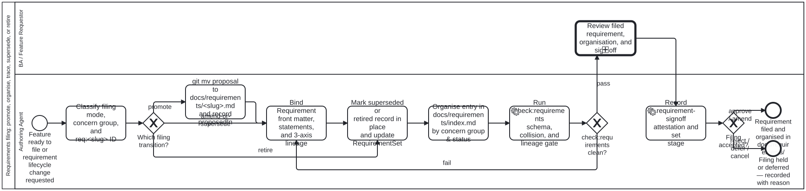

Requirements filing and organisation: literature search, adopted methodologies, and filing process
- Bean:
folio-assistant-qh1s - Issue: #1164
- Methodology node:
methodologies/requirements-filing-and-organisation.md - Proposed BPMN diagram:
processes/sdlc/requirements-filing.bpmn(checklist) - Status: Proposed — put to the owner before any automation beyond
check:requirementsis built.
1. Question and scope
docs/requirements/index.md currently holds only its index, and skills/sdlc/crdm/crdm-requirements-workflow.md explicitly deferred the corpus-level organisation and lifecycle rules to bean folio-assistant-qh1s:
“Today the directory is empty and a flat list in
index.mdis enough. Once it is not, how requirements are grouped, cross-referenced, superseded and retired needs a method rather than an ad-hoc table — tracked asfolio-assistant-qh1s, which begins with a literature search over requirements-management practice and proposes the filing process as BPMN before anything is built.”
This proposal summarizes the literature search and methodology adoption recorded in methodologies/requirements-filing-and-organisation.md, presents the proposed executable BPMN process (processes/sdlc/requirements-filing.bpmn), and sets out the three design decisions for the owner before any new code or schema field is added.
2. Literature search summary: what each source offers
Full source notes and citations are in methodologies/requirements-filing-and-organisation.md §1.
| Source | What it offers here across the 5 dimensions (organisation, identifiers, traceability, change, retirement) |
|---|---|
| ISO/IEC/IEEE 29148:2018 (Clauses 5.2.7, 6.4, 6.5) | Attributes & Bidirectional Traceability: Defines the core requirement attribute canon (id, status, rationale, verification criteria) and mandates bidirectional traceability (backward to originating proposal/source via proposedIn and derivedFrom; forward to design, implementation, and verification via beans, skills, processes, and test/attestations/) plus formal baseline sign-off (RequirementSet.stage). |
| Volere Specification Template (Robertson & Robertson, 4th ed.) | Domain/Concern Grouping & Fit Criteria: Groups atomic requirements (“Snow Cards”) by functional concern area rather than implementation file, and pairs every requirement statement with a mandatory measurable Fit Criterion (statements[].successCriteria). |
| IREB CPRE (Pohl & Rupp, 3rd ed.) | Decoupling IDs from Views & 3-Axis Traceability: Separates immutable requirement IDs and flat storage paths from faceted navigation views so reorganising how requirements are browsed never renumbers IDs or breaks links; formalises backward (derivedFrom), horizontal (dependsOn), and forward trace axes. |
| Doorstop (Browning & Adams, JOSS 2014) | Git-Native One-File-Per-Requirement & In-Place Retirement: Stores each requirement as a version-controlled text file with YAML front matter + Markdown body (docs/requirements/<slug>.md) so requirement changes travel in the same PR as code and tests, and retires items in place via status flags rather than git rm. |
Nygard ADRs & MADR 3.0.0 (methodologies/madr.md) | Slug Continuity (git mv) & Immutable Supersession Chains: Promotes docs/proposals/<slug>.md → docs/requirements/<slug>.md via git mv (preserving git log --follow and recording proposedIn), and models scope-changing replacements as status: superseded + supersededBy: req:<new-slug> without deleting old records. |
W3C PROV-O (library/w3c-2013-prov-o) | Provenance Graph Semantics: Grounds proposedIn and derivedFrom in prov:wasDerivedFrom, sign-off attestations in prov:wasAttributedTo, and retirement/supersession in prov:wasInvalidatedBy / prov:wasRevisionOf. |
RFC 2119 & RFC 8174 (library/rfc2119-key-words-requirement-levels, library/rfc8174-uppercase-vs-lowercase-2119-key-words) | Sub-Statement Normative Addressing: Grounds statements[].modality (MUST, SHOULD, MAY) and statement-level URI addressing (req:<slug>#<key>) so individual normative clauses can be attested independently. |
| IEEE Std 830-1998 (superseded SRS standard) | Negative Baseline: Demonstrates why monolithic single-file SRS documents and positional section numbers (§3.2.1.4) fail in distributed Git workflows (renumbering cascades and merge conflicts). |
3. Adopted vs rejected methodologies
Full adoption bindings and partial-adoption boundaries are in methodologies/requirements-filing-and-organisation.md §2.
3.1 Adopted (4 orthogonal practices)
- M1 — Doorstop + MADR git-native file-per-requirement and two-level semantic IDs (
req:<slug>andreq:<slug>#<key>):- One Markdown file per requirement at
docs/requirements/<slug>.mdwithid: req:<slug>and statement keysreq:<slug>#<key>. - Slug uniqueness enforced across
docs/proposals/anddocs/requirements/bycheck:requirements. - Left behind from Doorstop: sequential integer filenames (
REQ001.yml) and whitespace SHA-fingerprint clearing.
- One Markdown file per requirement at
- M2 — Faceted concern-group organisation (
code-lists/concern-group.json) over flatdocs/requirements/<slug>.mdpaths (Volere + IREB):- Physical files stay flat at
docs/requirements/<slug>.mdsogit mv docs/proposals/<slug>.md docs/requirements/<slug>.mdis 1:1 andreq:<slug>resolves in O(1) without directory traversal. docs/requirements/index.mdorganisesin-forcerequirements under the eight canonical concern groups fromcode-lists/concern-group.json(sdlc,process,tools,kg,library,content,ui,conduct), followed by a separate table ofsupersededandretiredrequirements.
- Physical files stay flat at
- M3 — ISO/IEC/IEEE 29148 + IREB + W3C PROV-O three-axis traceability:
- Backward:
proposedIn(commit+path) andderivedFrom(req:<slug>orlibrary/<bib-slug>). - Horizontal:
dependsOn(req:<slug>). - Forward:
beans,skills,processes,RequirementSet(docs/requirements/*.set.json), andtest/attestations/+test/runs/citingreq:<slug>orreq:<slug>#<key>.
- Backward:
- M4 — MADR / ISO 29148 immutable lifecycle for change, supersession, and retirement (
proposed → in-force → superseded | retired):- Clarifications and additive sub-clauses amend
docs/requirements/<slug>.mdin place (with re-sign-off on anyapproved/acceptedRequirementSet). - Reversals or replacement contracts file
docs/requirements/<new-slug>.md(derivedFrom: [req:<old-slug>]) and flipdocs/requirements/<old-slug>.mdtostatus: superseded+supersededBy: req:<new-slug>. - Obsolete requirements flip to
status: retiredin place and are nevergit rm-deleted.
- Clarifications and additive sub-clauses amend
3.2 Rejected (5 candidate practices, with reasons)
- R1 — IEEE 830 monolithic SRS and positional outline numbering (
§3.1.2): Rejected because outline edits renumber requirements, breakingreq:URIs in tests and attestations, and a single file causes Git merge conflicts. - R2 — Centralised sequential integer IDs (
REQ-0001): Rejected because parallel branches/worktrees collide on the next integer without a central lock server, and opaque numbers carry no domain meaning in prose or test output. - R3 — Physical subdirectory sharding (
docs/requirements/<group>/<slug>.md): Rejected becausecheck-requirements.ts(mdFilesIn) scansdocs/requirements/anddocs/proposals/non-recursively for 1:1 slug collisions, and cross-cutting requirements would suffer path churn if re-categorised. - R4 — ReqIF XML / raw OSLC RDF as the authored format: Rejected (per
requirements-standards-assessment.md) because XML UUID graphs are hostile to PR review and human/agent co-authoring. - R5 — Destructive deletion (
git rm) of retired or superseded requirements: Rejected because deleting a requirement file breaks historicalderivedFrom,dependsOn, and attestation pointers.
4. Proposed BPMN filing process (processes/sdlc/requirements-filing.bpmn)

The diagram processes/sdlc/requirements-filing.bpmn (Process_RequirementsFiling, step-by-step checklist at processes/sdlc/requirements-filing.checklist.md) models the filing workflow across two lanes (BA / Feature Requestor and Authoring Agent):
A_ClassifyFiling(crdm-requirements-workflow): Classify the transition (promotefromdocs/proposals/<slug>.md,amend-or-supersedean existing requirement, orretirean obsolete requirement), assign the primary concern group fromcode-lists/concern-group.json, and checkreq:<slug>uniqueness.GW_FilingMode: Route by transition kind (promoteamend-or-supersederetire).A_PromoteOrUpdate(crdm-requirements-workflow): Forpromote, capture the last proposal commit SHA, rungit mv docs/proposals/<slug>.md docs/requirements/<slug>.md, and populateproposedIn.A_BindFrontMatter(specification-management): Author/updateRequirementfront matter (id,title,status,statements[]withkey/modality/statement/successCriteria,derivedFrom,dependsOn,beans,skills,processes).A_UpdateLifecycle(specification-management): When superseding or retiring, update the old requirement in place (status: superseded+supersededBy: req:<new-slug>, orstatus: retired) and update any affectedRequirementSet(docs/requirements/*.set.json).A_UpdateIndex(crdm-requirements-workflow): Organise the requirement indocs/requirements/index.mdunder its concern group (in-force) or under the Superseded & Retired table.A_RunCheck(specification-management): Runbun run cat check:requirements(non-relaxable service task).GW_CheckPassed: Loop back toA_BindFrontMatteronfail; advance toBA_ReviewFilingonpass.BA_ReviewFiling(adjudication, human-only): Business Analyst / Owner adjudicates (approve,amend,reject,defer,cancel).A_RecordFilingSignoff(adjudication): Append therequirement-signoffattestation and update theRequirementSetstage.GW_FilingAccepted: Transition toEnd_RequirementFiled(approve/amend) orEnd_FilingHeld(reject/defer/cancel).
5. Decisions for the owner before building
- D1 — Where concern-group membership is recorded:
- Option 1A (Recommended, zero schema change): Keep
bootstrap/schemas/requirement.schema.jsonunchanged and organise requirements by concern group (code-lists/concern-group.json) indocs/requirements/index.md(and optional per-concernRequirementSetfilesdocs/requirements/<group>.set.json). - Option 1B (Schema addition): Add an optional
concernsarray (codes fromcode-lists/concern-group.json) tobootstrap/schemas/requirement.schema.jsonsodocs/requirements/index.mdcan be auto-generated from front matter.
- Option 1A (Recommended, zero schema change): Keep
- D2 —
dependsOntarget status check incheck:requirements:- Should
check:requirementsrefuse (or warn) when anin-forcerequirement lists adependsOntarget whose status issupersededorretired? (Recommended: refuse, so superseding or retiring a dependency forces callers to re-point or update their lineage in the same PR.)
- Should
- D3 — Calling
Process_RequirementsFilingfromcrdm-close.bpmn:- Once approved, should
crdm-close.bpmninclude a<bpmn:callActivity calledElement="Process_RequirementsFiling">betweenBA_ConfirmandCall_MergeToMainwhenever the feature has a proposal indocs/proposals/<slug>.md?
- Once approved, should